L’Oréal / TikTok Shop Brand Live
From live optimization to performance impact
Real-time monitoring and optimization during key Brand Live moments.
- Peak OAP SMG Daily GMV
- 2.12B VND
- Peak 3CE SMG Daily GMV
- 1.51B VND
- GAR achievement vs. benchmark
- 127%
What I did on the ground
Monitor performance → Coordinate with Ops → Adjust product focus → Optimize live execution
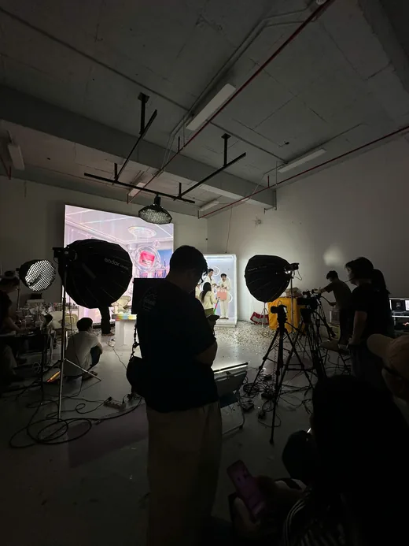
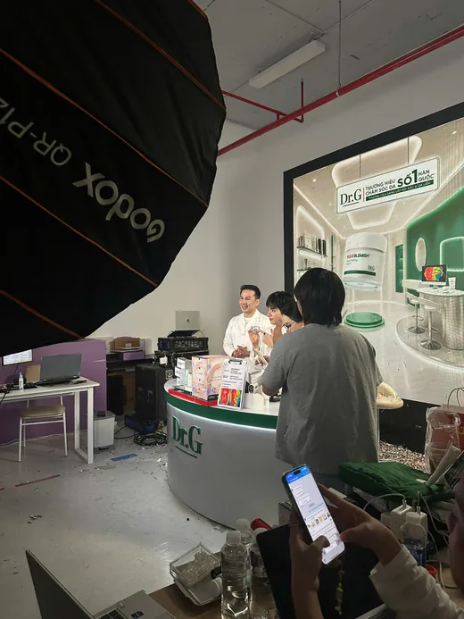
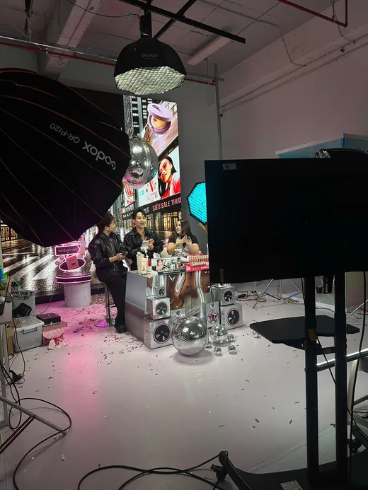
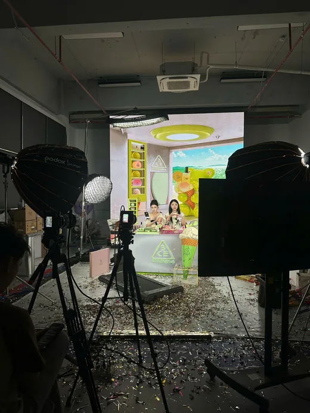
Connecting real-time performance signals with on-ground product decisions during high-impact livestream sessions.
From execution to a scalable workflow
Starting pointFive CPD brands each used a different dashboard and tracking method.
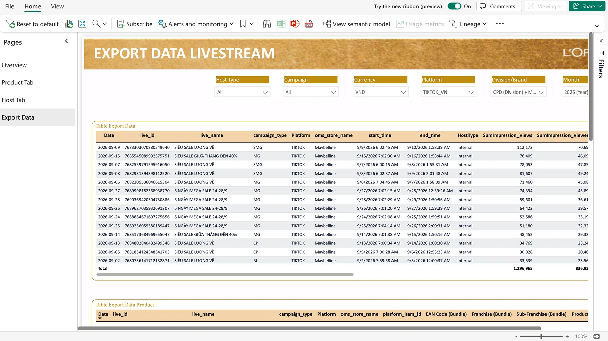
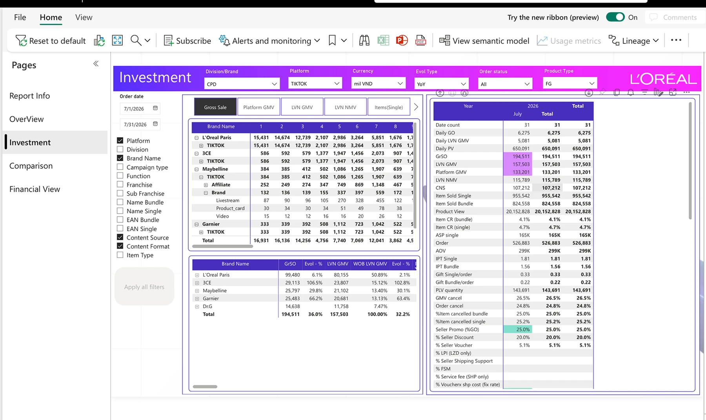
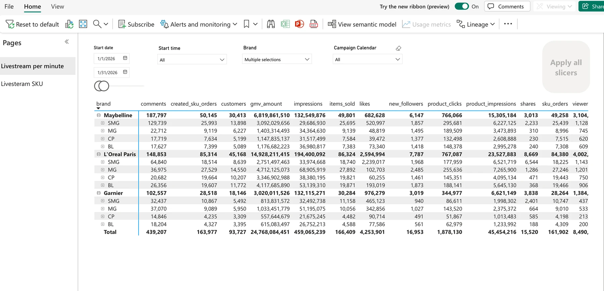
What I builtI standardized the five dashboards into a shared workflow with a consistent view of performance.
One daily view for Brand Live performance
- Daily performance — GMV, achievement, orders, views and impressions
- Funnel efficiency — CTR, CTOR, Watch GPM and Show GPM
- Campaign and CP mapping — compare performance across live formats
- Monthly benchmarks and trends — compare results with previous periods
What started as my own performance tracker became a daily workflow for teams across functions.

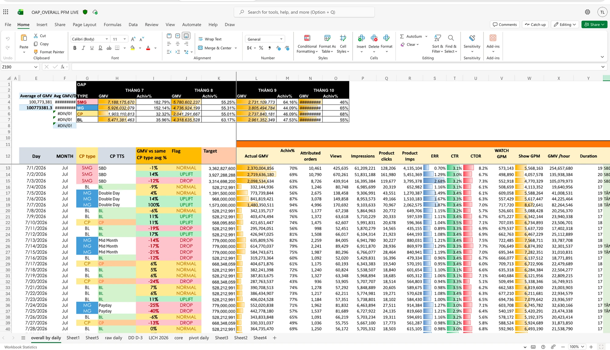
Going one layer deeper into product performance
Overall results showed when performance changed. Product-level tracking showed which SKUs drove the change.
- Top 10 products — GMV, contribution, orders, CTR, CTOR and Watch GPM
- Product trends — daily performance by SKU and campaign type
- Hero and key products — identify consistent drivers of Brand Live GMV
The team used this view to decide which products to push, monitor or optimize during key livestreams.


From performance tracking to future planning
Hourly BAS performance dashboard
I worked with the Data team on an hourly view to identify when performance peaks, which hosts drive it, and which products contribute across the BAS portfolio.

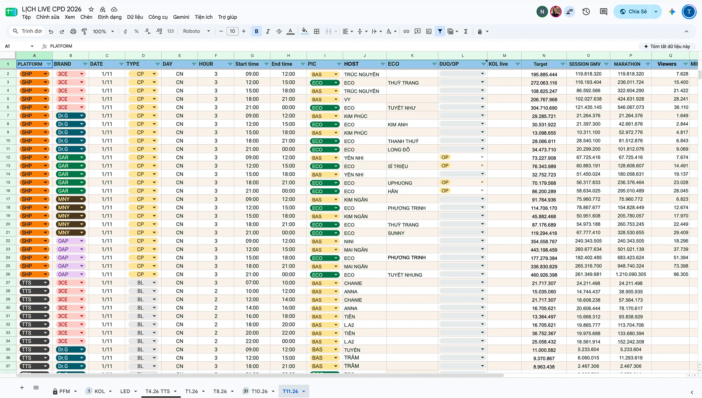
Team Recognition
Bronze — Cracking the TikTok Shop Brand Livestream Equation
DASTR Awards
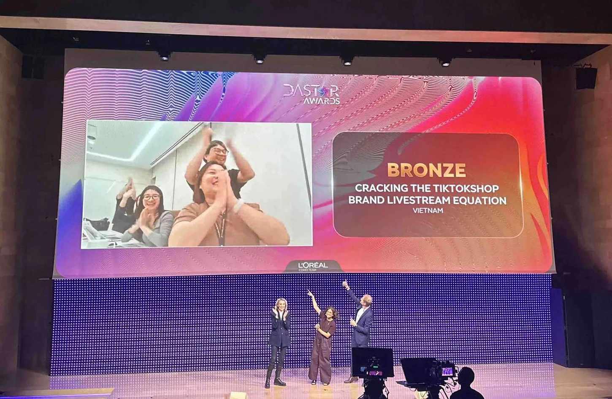
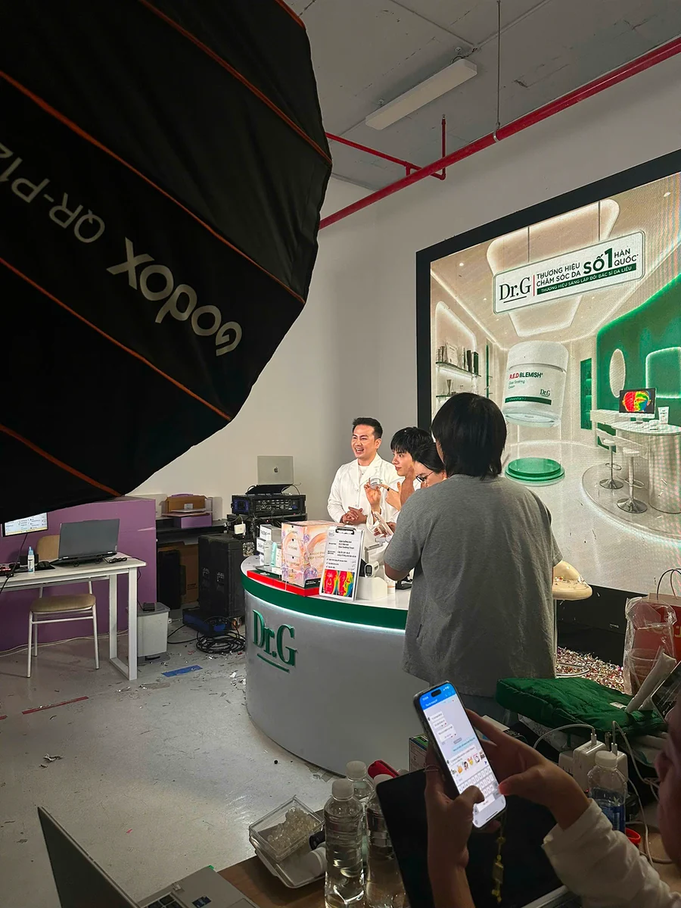
From understanding performance to helping shape what comes next.
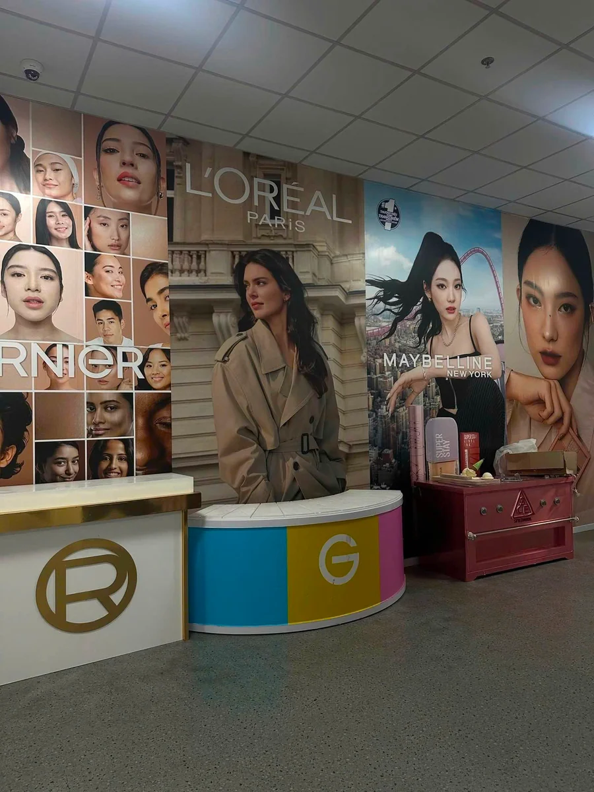